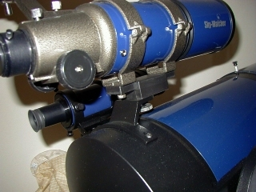
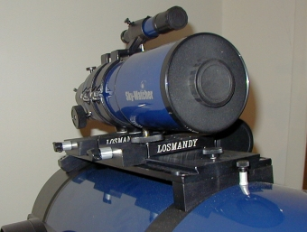
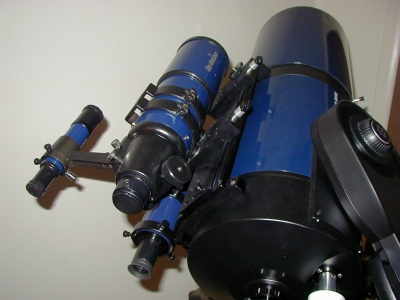
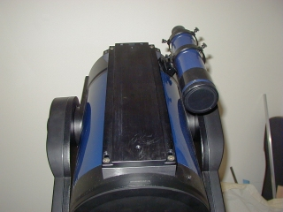
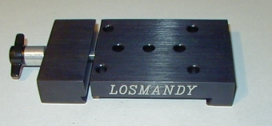
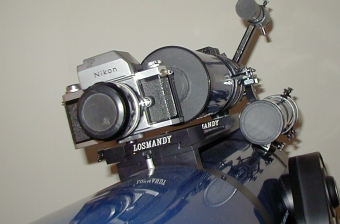
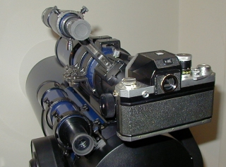
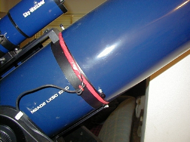

|
Losmandy Dovetail and the Skywatcher 804 Since I had planned to do some wide field imaging with my Nikon F, and wasn't planning on buying a .63 reducer / corrector for the LX90, I opted for a different alternative. I originally bought a Meade camera adapter for the LX90 and used that for a few times. My Nikon only has a 50mm f1.4 lens and was giving me very large fields of view, far more than I wanted. It also picked up my Meade dew shield attachment thumbscrews in it's FOV. Attaching the Nikon at prime focus was too narrow for wide field, so I decided to buy a short tube 80 refractor. Looking at all the suppliers (Orion, Celestron, Skywatcher and others), it seemed the ST80 was pretty much the same OTA, just painted and branded for each company that was selling them. I chose the Skywatcher 804 simply for aesthetic reasons - the color matched my LX90 OTA perfectly and makes it look like it was made for the SCT. The Skywatcher is an 80mm f/5 (400mm fl) achromatic refractor. Not only is it a great wide field scope for the LX90, but on it's own tripod it makes an excellent terrestrial / wildlife scope. The ST80 was taken apart, and minor tune-ups done (ST80 tune-ups). While disassembled, the gray enameled parts were repainted flat black.  I originally attached the 804 to the Meade camera adapter. This was fine for visual use but there was no way it would support the Nikon F as well. It also was a pain to collimate to the LX90. The Skywatcher weighs in at 3 pounds and really put the maximum amount of weight on the camera adapter. After looking around at alternatives, I decided on the Losmandy dovetail system.  I opted to use the Skywatcher's original rings, as they provided a secure quick release mount, and once on the dovetail are only slightly out of collimation to the LX90. Slight adjustments when mounting the DA plate to the dovetail finalizes collimation.  Losmandy was chosen because they have an impressive array of adapters that can be used with the dovetail. Installing the dovetail required the removal of the Meade camera adapter. The Losmandy dovetail was used with the "DA" adapters for the Skywatcher 804, as well as with a piggyback camera adapter for the Nikon. The Nikon could be slid on the dovetail with the Skywatcher still in place.  The Losmandy DM8 system for Meade 8" SCT's includes the dovetail, two mounting blocks and required hardware. The mounting blocks attach to the front and rear of the scope using the supplied mounting holes on the Meade OTA. Losmandy supplies stainless replacement allen head cap bolts for this purpose. The dovetail is attached to the mounting blocks in a similar fashion, again with supplied replacement bolts. Two 1/4-20 thumbscrews are supplied as safety screws - to prevent accessories on the dovetail from sliding off if the female plate accidentally loosens. Machining is of very high quality and all surfaces are polished and black anodized. All edges are round finished with no sharps anywhere. Everything lines up perfectly with one another, and with the scope itself. I was pleasantly surprised at the quality of work in this mounting system, even after having been highly recommended to me by many people. 
 My second DA plate contains a 1/4-20 stud for the Nikon, to replace the Meade camera adapter. This arrangement works well, but the DA plate must be attached to the camera first, then slid on the dovetail. The Skywatcher can stay mounted while the Nikon sits at the front of the dovetail. A small readjustment of the Meade weight set is required when the Nikon is mounted up front.  The only potential problem from installing the dovetail, was the needed space for the corrector heater. Luckily, there was just enough room between the dovetail and Meade dewshield to allow for the coil to be placed at the corrector's edge within the OTA. Between the heater and the dew shield, I rarely have to call it a night due to the corrector fogging up or frosting. The heater is a home made 12 watt, 1 amp device, made from an old electric blanket's nichrome wire, and is powered off a separate 17ah battery.  This arrangement gives me the best of both worlds. I now have a wide field scope that I can use without changing EP's around or using a focal reducer, and which doubles as a wide field lens for the Nikon. I also retain a piggyback camera mount and it can be slid on the dovetail at a moments notice. The options are available to me now for a multitude of other arrangements (weights, tube rings, telephoto lens supports). The Losmandy system is very well built and machined, and it's a beautifully designed system as well. Being able to slide the accessories along the dovetail makes balancing the OTA a snap, and setup / teardown is easier and faster than before.
|| Back
to Contents || Wedge
adapter || Focuser
|| Azimuth adjuster
|| Weight Set
|| Dovetail
||
|